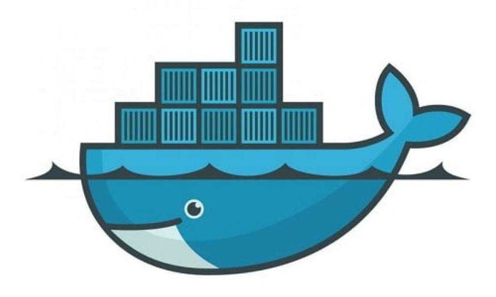

Docker & Docker Compose
Từ Căn Bản Đến Thực Chiến: Đóng Gói, Quản Lý & Triển Khai Ứng Dụng Hiện Đại
Từ Căn Bản Đến Thực Chiến: Đóng Gói, Quản Lý & Triển Khai Ứng Dụng Hiện Đại

• Dev A dùng Node 18, Dev B dùng Node 20.
• Server lại cài Node 16.
➔ Dẫn tới code crash đột ngột vì hàm không tương thích.
• Thiếu biến môi trường (.env).
• Quên cài gói phụ thuộc trên Linux (ffmpeg, graphicsmagick, cairo).
➔ Làm tính năng ngưng hoạt động.
• Thành viên mới mất 1 – 2 ngày cài môi trường.
• Phải setup cơ sở dữ liệu, Redis, SDK,...
➔ Tốn nhiều thời gian trước khi gõ được dòng code đầu tiên.
Docker đóng gói mã nguồn cùng tất cả phụ thuộc (runtime, thư viện hệ thống, file cấu hình) vào một đơn vị độc lập gọi là Container.
Giống như việc đóng gói cả căn phòng (bàn ghế, thiết bị) vào một thùng container tiêu chuẩn — mang đi tới bất kỳ con tàu hay bến cảng nào cũng lắp ráp y hệt.
• Mỗi VM chạy 1 Hệ điều hành hoàn chỉnh riêng (Guest OS).
• Nặng nề: Kích thước hàng GBs, tốn CPU/RAM gánh OS.
• Khởi động chậm: Mất từ vài chục giây đến vài phút.
• Không có Guest OS, dùng chung Kernel của máy thật (Host Kernel).
• Siêu nhẹ: Kích thước chỉ từ vài MB đến vài chục MB.
• Khởi động tức thì: Chỉ mất vài mili-giây.
Dockerfile là một file văn bản thuần túy (`text file`) chứa các chỉ thị để Docker tự động hóa quá trình dựng môi trường ứng dụng.
FROM
Chọn Base Image nền tảng (Node, Python, Java, Ubuntu,...).
WORKDIR
Tạo và chuyển vào thư mục làm việc bên trong container.
COPY
Sao chép mã nguồn/file từ máy thật vào container.
RUN
Chạy lệnh cài đặt thư viện (npm install, apt-get install,...).
EXPOSE
Khai báo cổng (Port) ứng dụng sẽ lắng nghe.
CMD
Lệnh chính khởi chạy app khi Container bắt đầu bật.
# Bước 1: Chọn môi trường nền tảng Node.js 18 (bản siêu nhẹ Alpine)
FROM node:18-alpine
# Bước 2: Tạo thư mục /app trong container để chứa mã nguồn
WORKDIR /app
# Bước 3: Copy file package.json và cài đặt thư viện trước
COPY package*.json ./
RUN npm install
# Bước 4: Copy toàn bộ mã nguồn dự án vào container
COPY . .
# Bước 5: Khai báo cổng 3000
EXPOSE 3000
# Bước 6: Lệnh thực thi khởi chạy ứng dụng khi container bắt đầu
CMD ["node", "server.js"]• Là sản phẩm được đóng gói thành công sau khi chạy `Dockerfile`.
• Read-only (Chỉ đọc): Không thể sửa đổi trực tiếp vào Image (giống file nén `.zip` đã khóa).
• Dễ dàng chia sẻ lên registry (Docker Hub, AWS ECR).
Tạo Image từ Dockerfile:
docker build -t my-web-app:v1 .
Xem các Image trên máy:
docker images
Xóa một Image không dùng:
docker rmi my-web-app:v1
• Là thực thể sống được đúc ra từ Image.
• Môi trường cách ly: có CPU, RAM, Disk và IP riêng.
• Từ 1 Image có thể bật ra 10 hay 1000 Containers cùng lúc để chia tải (Port 3001, 3002, 3003).
# Chạy Image thành Container ngầm ở port 8080
docker run -d -p 8080:3000 --name my-app my-web-app:v1
# Xem danh sách container đang chạy
docker ps
# Dừng / Bật lại / Xóa container
docker stop my-app
docker start my-app
docker rm my-app| Tiêu Chí | Docker Image | Docker Container |
|---|---|---|
| Bản chất | Bản thiết kế / Khuôn đúc tĩnh. Chứa mã nguồn, runtime và cấu hình. | Thực thể thực tế được bật lên từ Image. Có lớp ghi dữ liệu riêng (`Writable Layer`). |
| Trạng thái | Tĩnh, không thực thi tiến trình nào, không tốn CPU/RAM. | Đang chạy, tiêu tốn CPU, RAM và tài nguyên thực tế. |
| Mối quan hệ | 1 Image duy nhất có thể làm khuôn đúc... | ...cho nhiều Container chạy độc lập song song cùng lúc. |
• Mã nguồn dự án tự viết: Web Node.js, Spring Boot, Python FastAPI, ReactJS,...
• Tùy biến OS có sẵn: Cài thêm tool Linux (ffmpeg, curl) hoặc sửa file `nginx.conf`.
• Tự động hóa CI/CD: Tự build Image mới mỗi khi push code lên GitHub/GitLab.
• Database: PostgreSQL, MySQL, MongoDB, Redis.
• Cache & Queue: Redis, RabbitMQ, Kafka.
• Web Server & Tools: Nginx, Traefik, phpMyAdmin.
Chỉ cần dùng trực tiếp lệnh `docker run` hoặc thẻ `image:` trong Compose!
• Volume là một thư mục nằm an toàn trên máy thật (`/var/lib/docker/volumes/`).
• Dữ liệu từ Container được ghi trực tiếp xuống ổ cứng máy thật.
• Khi container bị xóa, Volume vẫn nằm nguyên — Container mới chỉ cần mount lại Volume cũ là xong!
# Tạo volume độc lập
docker volume create my_db_data
# Gắn Volume khi chạy Postgres container
docker run -d \
-v my_db_data:/var/lib/postgresql/data \
postgres:15-alpine• Chạy tay từng lệnh docker run cho 5–10 container.
• Nhớ hàng tá flag (-p, -v, -e, --network) rất dài và dễ sai.
• Backend cần Database chạy xong mới kết nối được.
• Chạy tay sai thứ tự làm Backend sập ngay lập tức vì không tìm thấy DB.
• Phải tự gõ docker network create thủ công.
• Hardcode địa chỉ IP nội bộ — vốn thay đổi liên tục sau mỗi lần restart.
Tạo docker network create my-net, cho cả 2 join network. Backend gọi DB qua Container Name (DNS tự động): postgres://db-container:5432.
Dùng docker run --link db:db .... Docker tự động mapping IP của DB vào file /etc/hosts bên trong Backend container (cơ chế cũ).
Map port DB ra máy thật (-p 5432:5432), Backend gọi DB thông qua IP Host hoặc domain host.docker.internal:5432.
Quản lý 1 container bằng docker run đơn giản, nhanh chóng và đóng gói môi trường hoàn hảo.
Quản lý 5–10 container bằng tay lại là một cơn ác mộng dài dòng và dễ sai sót.
docker-compose.yml).
Tất cả Service, Network, Volume, Environment được gom về 1 file `docker-compose.yml` dễ đọc.
Khai báo rõ container nào chạy trước (DB) mới tới container chạy sau (Backend).
Tự động tạo Mạng ảo bridge — các container tìm thấy nhau trực tiếp qua tên Service.
version: '3.8'
services:
backend_api:
build: ./backend # Mã nguồn nhóm tự viết -> dùng build:
ports:
- "3000:3000"
environment:
DB_HOST: database_service # Điền TÊN SERVICE của DB phía dưới!
depends_on:
- database_service # Chờ DB chạy xong mới bật Backend
database_service:
image: postgres:15-alpine # Dịch vụ có sẵn -> dùng image:
environment:
POSTGRES_PASSWORD: secretpassword
volumes:
- postgres_data:/var/lib/postgresql/data
volumes:
postgres_data:docker compose up -d
Khởi chạy toàn bộ cụm dịch vụ ngầm trong nền.
docker compose ps
Xem trạng thái danh sách các service đang chạy.
docker compose logs -f
Xem log thời gian thực của toàn bộ cụm dịch vụ.
docker compose down
Dừng và gỡ bỏ toàn bộ cụm container & network.
docker compose down -v
Tắt cụm dịch vụ và XÓA LUÔN VOLUME (Reset toàn bộ dữ liệu sạch).
Docker Compose tự cấp phát một mạng Bridge nội bộ cách ly an toàn cho tất cả dịch vụ trong file.
Các container kết nối nhau bằng Tên Service (ví dụ: `database_service`) thay vì IP động. DNS nội bộ tự phân giải địa chỉ chính xác.
-p, -v, -e, --net, --name).Các câu lệnh phải gõ thủ công:
# 1. Tạo Mạng & Volume nội bộ
docker network create demo-net
docker volume create pg-data
# 2. Khởi chạy Database Container
docker run -d --name demo-db --net demo-net \
-v pg-data:/var/lib/postgresql/data \
-e POSTGRES_USER=postgres -e POSTGRES_PASSWORD=postgres \
-e POSTGRES_DB=demodb -p 5433:5432 postgres:16-alpine
# 3. Build Image & Khởi chạy App Container
docker build -t backend-app:v1 .
docker run -d --name backend-app --net demo-net -p 8081:3000 \
-e DATABASE_URL=postgres://... backend-app:v1docker-compose.yml.depends_on).Các câu lệnh duy nhất cần chạy:
# Khởi chạy toàn bộ hệ thống (Auto Build, Network, Volume)
docker compose up -d
# Xem trạng thái các dịch vụ đang chạy
docker compose ps
# Dừng và dọn dẹp sạch toàn bộ hệ thống
docker compose down• Tách hệ thống thành hàng trăm dịch vụ (Search, Recommend, Payment).
• Lỗi ở 1 nơi không làm sập toàn bộ app.
• Khi có Album hot, tự nhân bản từ 50 lên 5.000 containers chia tải.
• Tự hạ bớt khi hết giờ cao điểm để tiết kiệm chi phí.
• Chạy mượt mà trên AWS, Google Cloud toàn cầu.
• Không cần cấu hình lại OS hay thư viện máy chủ.
• Bật container mới song song rồi mới gỡ container cũ.
• Người dùng nghe nhạc mượt mà, không gặp báo bảo trì.
Khi dùng `COPY . .`, Docker sẽ gom cả `node_modules/`, `.git/`, `.env`, log vào Image context.
-> Image phình to hàng trăm MB, build và upload cực kỳ chậm.
node_modules
.git
.env
dist
build
*.logDùng Multi-stage Build: Giai đoạn 1 compile bằng container tạm -> Giai đoạn 2 chỉ copy bản build sang container siêu nhẹ để chạy.
# Stage 1: Build mã nguồn
FROM node:18-alpine AS builder
WORKDIR /app
COPY package*.json ./
RUN npm install
COPY . .
RUN npm run build
# Stage 2: Production Runner siêu nhẹ với Nginx
FROM nginx:alpine
COPY --from=builder /app/dist /usr/share/nginx/html
EXPOSE 80
CMD ["nginx", "-g", "daemon off;"]• Ai tải Image về cũng dùng `docker history` đọc được mật khẩu trong các layer.
• Giải pháp: Luôn truyền thông tin nhạy cảm qua file `.env` hoặc biến môi trường `environment:`.
docker system df
Kiểm tra dung lượng Docker chiếm dụng.
docker system prune
Xóa container dừng & build cache rác.
docker system prune -a --volumes
Dọn dẹp triệt để toàn hệ thống.
Cú pháp: -p [Host_Port]:[Container_Port]
Nếu máy thật đã chạy MySQL ở cổng `3306`, ta đổi cổng ngoài thành `-p 3307:3306` để tránh xung đột.
Inside container, `localhost` chỉ trỏ tới chính nó chứ không trỏ tới máy thật hay container khác!
-> Báo lỗi ngắt kết nối: ECONNREFUSED 127.0.0.1:5432.
• Máy thật (Host): Khu trọ lớn.
• Backend Container: Phòng 101.
• Database Container: Phòng 102.
Nói `localhost` trong Phòng 101 có nghĩa là "tìm DB trong phòng 101" -> Phòng 101 không có DB nên báo lỗi!
services:
backend_api:
build: .
environment:
# ĐÚNG: Điền tên Service DB bên dưới!
DB_HOST: database_service
database_service:
image: postgres:15-alpine